Population
~2.0M
Residents within the municipal boundary
Smart City Wien · Academic Study 2026
Innovation · Sustainability · Quality of Life
An integrated urban system where multimodal mobility, circular energy, open governance and social housing are engineered as one public infrastructure.
01 — About Vienna
Vienna combines a compact metropolitan footprint with one of the world’s most mature public infrastructures. Its Smart City framework treats climate action, social cohesion and digital services as a single urban operating system.
Two million residents. Four hundred and fourteen square kilometres. One integrated strategy for a climate-neutral, socially inclusive city by 2040.
The municipal approach is deliberately systemic: housing policy supports mobility, public space absorbs heat and stormwater, open data improves service delivery, and district energy converts residual waste into heat. Each policy domain is measured, published and adjusted against shared indicators.
Population
~2.0M
Residents within the municipal boundary
Area
414.8 km²
Compact, polycentric urban territory
Urban Vision
Climate Neutrality 2040
Smart City Wien strategic horizon
Livability
High Livability Index
#1 Mercer Quality of Living
Baseline figures presented for academic analysis; current values are maintained by the City of Vienna and international indicator frameworks.
02 — Smart Mobility
A single integrated mobility system where trams, metro, bikes, shared cars and walking are coordinated through one fare, one app and one real-time data layer.
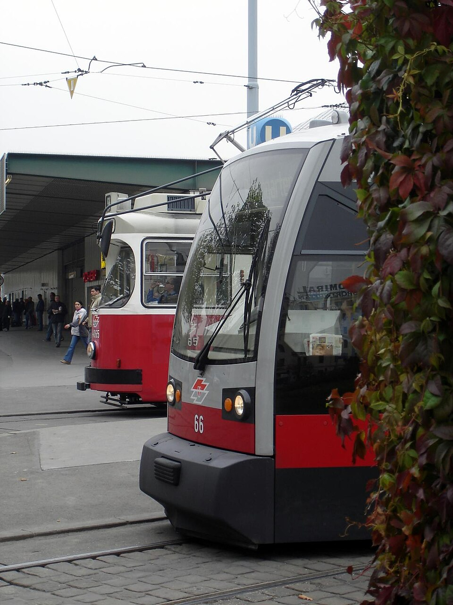
01 Rail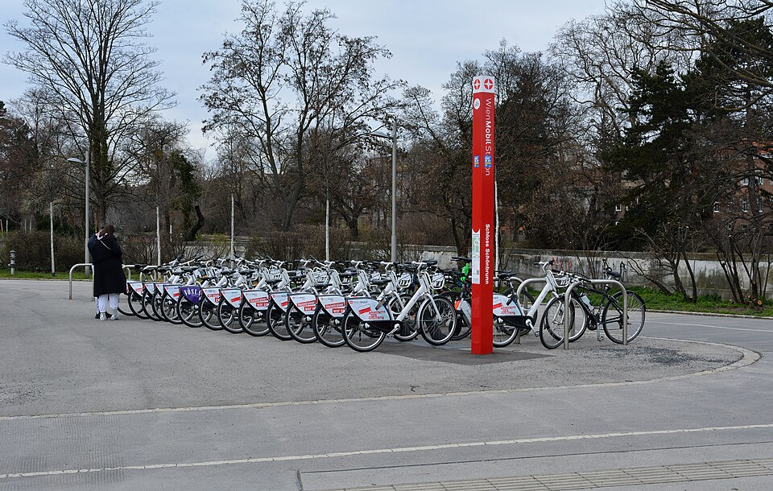
02 ActiveIntegrated Platform
Vienna makes public transport the default choice. The 365€ annual transit pass provides unlimited city travel for less than one euro per day. WienMobil connects metro, tram, bus, bike and car sharing in a single account, while real-time IoT arrival data keeps every interchange predictable. Electrification of the tram and bus fleet closes the remaining emissions gap.
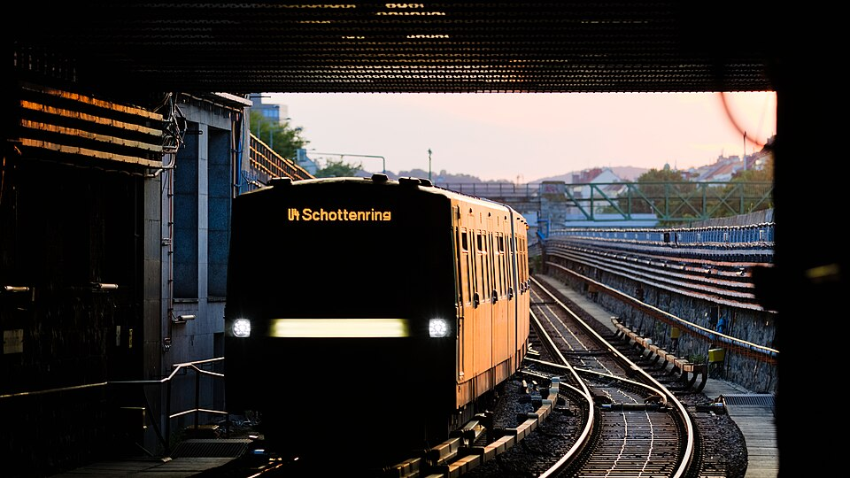
03 Interchange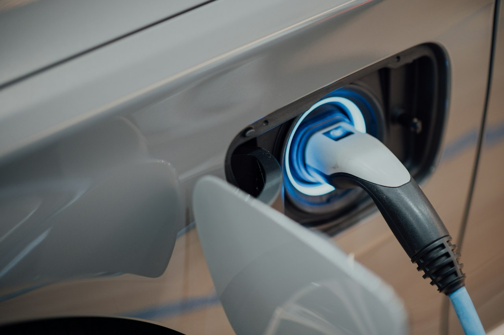
04 Electric03 — Smart Environment
Residual waste becomes district heat, the Danube floodplain becomes climate infrastructure, and more than half the city remains green.
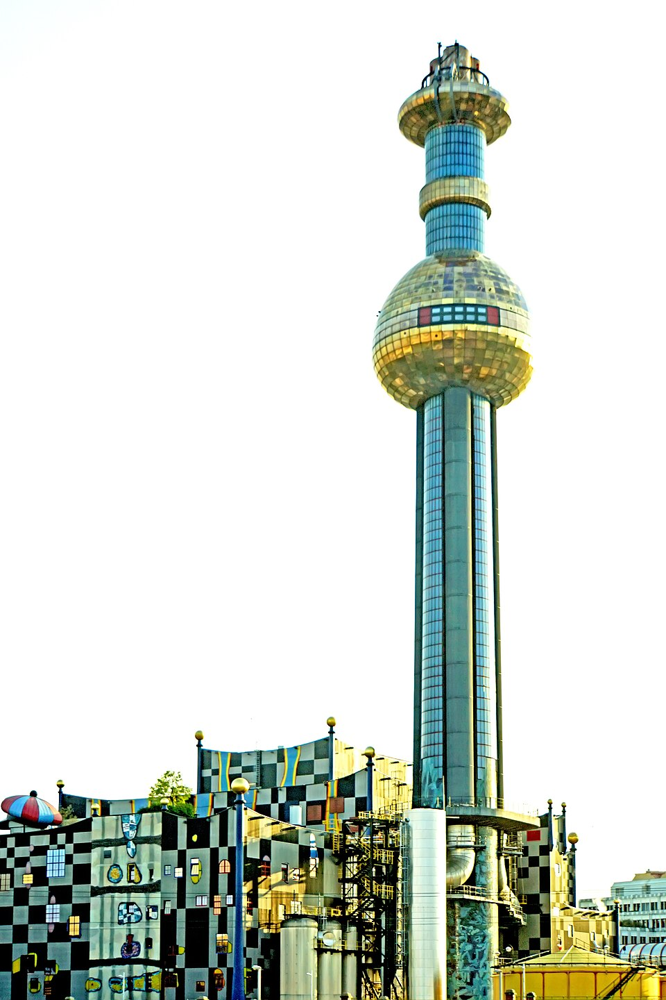
01 Circular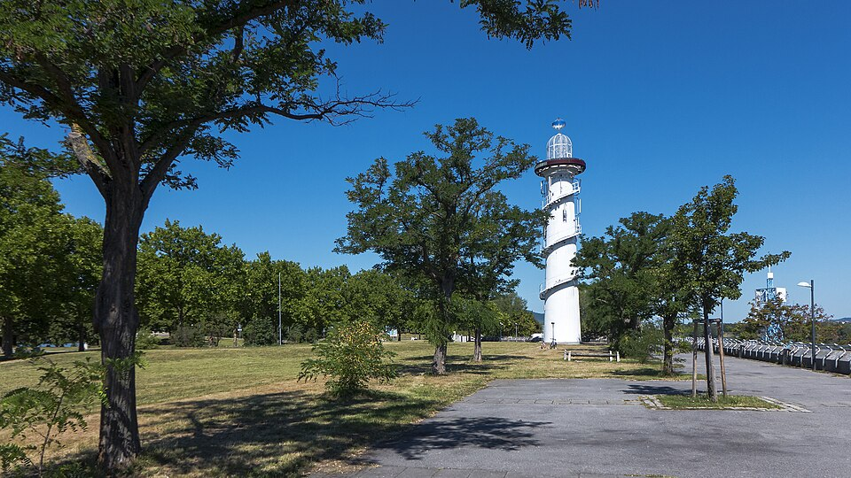
02 Blue-greenCircular Economy
Vienna treats residual waste as a thermal resource. Spittelau recovers heat from non-recyclable waste and feeds it into the Fernwärme Wien network, using multi-stage flue-gas cleaning to meet strict emission limits. The Donauinsel and urban wetlands provide flood protection and biodiversity, citizen-funded solar plants expand renewable generation, and sensor-based waste routing closes the material loop.
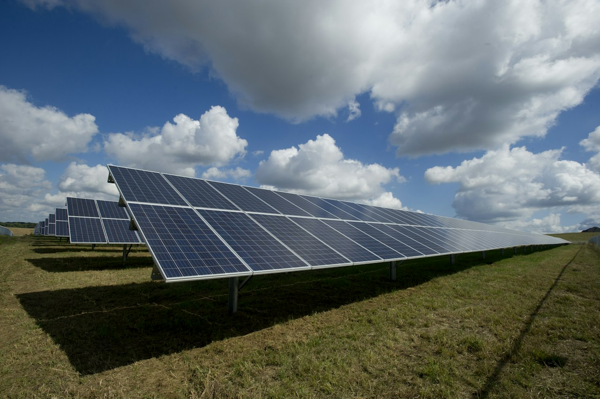
03 Solar04 — Smart Governance
Open data, participatory budgeting and transparent performance reporting turn municipal administration into a measurable public service.
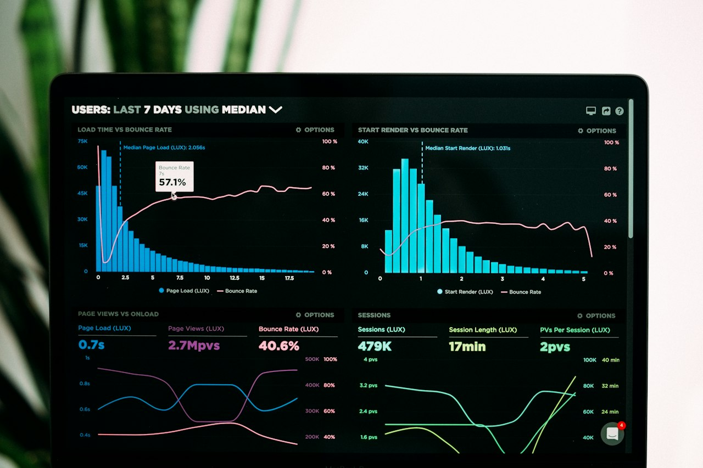
01 Open DataPublic Accountability
Vienna publishes municipal data as a public utility. OGD Wien provides open, machine-readable datasets and APIs; participatory budgeting and digital voting extend decision-making beyond election day; transparency dashboards expose budgets, procurement and service performance; and WienBot handles routine citizen requests around the clock. Governance becomes traceable, measurable and responsive.
05 — Smart Living
Affordable housing, timber construction, universal healthcare and complete neighbourhoods make Vienna’s liveability a structural outcome, not a slogan.
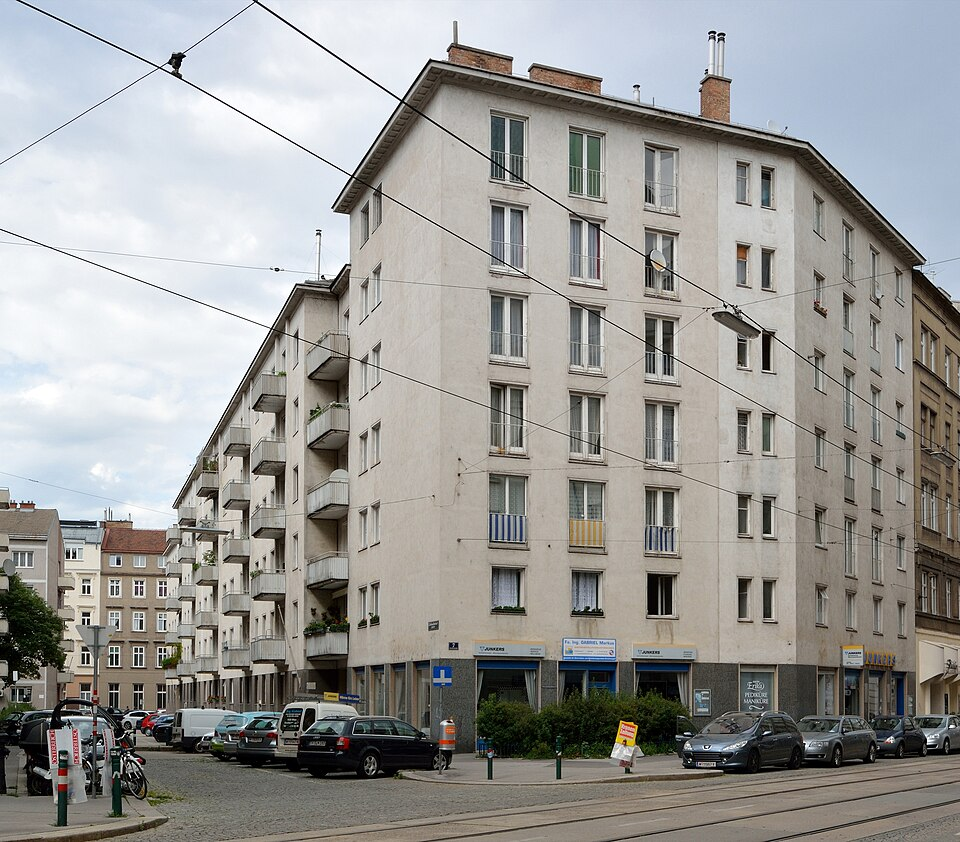
01 Housing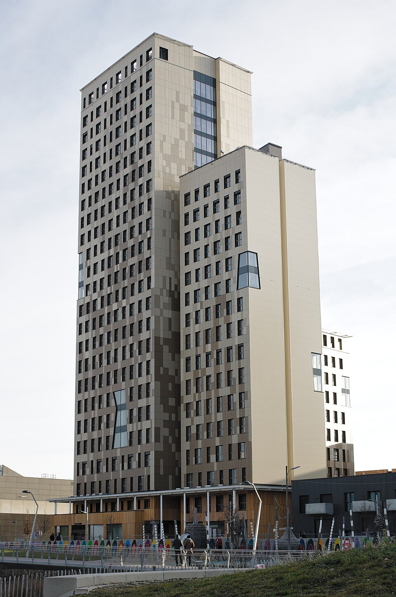
02 TimberSocial Infrastructure
Vienna’s quality of life is engineered through housing. More than six in ten residents live in subsidised or municipal housing, including the historic Gemeindebau and new cooperative districts. HoHo Wien in Aspern demonstrates that timber high-rise construction can store carbon at scale, while universal public healthcare and 15-minute neighbourhoods keep daily needs within walking distance.
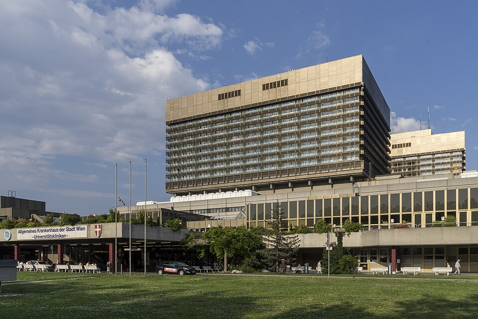
03 Health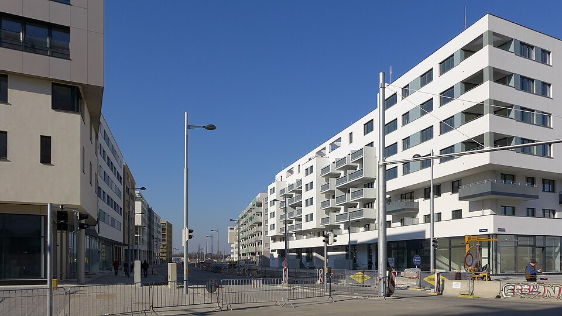
04 Proximity06 — Impact & Standards
Vienna’s performance is framed through the ISO 37120 and ISO 37122 indicator families, complemented by global liveability and smart-city strategy rankings.
Indicators for city services and quality of life across economy, education, energy, environment, health, safety, shelter and transport.
Smart-city indicators covering connectivity, open data, intelligent transport, digital public services and integrated urban management.
Global Recognition
Vienna’s rankings reflect sustained performance, not a single-year result.
Academic KPI Matrix
| Strategic Axis | Performance Indicator (KPI) | Current Value | Target (2030) | Status |
|---|---|---|---|---|
| Mobility | Modal Split: Public Transit, Walking & Cycling | 73% | 80% | On Track |
| Environment | Urban Green Space Coverage | 53% | >50% | Exceeded |
| Climate | Municipal Greenhouse Gas Reduction (vs 1990) | -34% | -55% | In Progress |
| Energy | Smart District Heating Renewable Integration | 42% | 60% | In Progress |
| Housing | Affordable & Social Housing Availability | 62% | >60% | Global Benchmark |
Yahia Farès University of Médéa
VIENNA SMART CITY — Innovation, Sustainability, Quality of Life
Vienna Smart City · Film
Innovation, sustainability and quality of life — an overview of Vienna’s integrated urban system.
The local film could not be loaded. Check the connection or retry the stream.